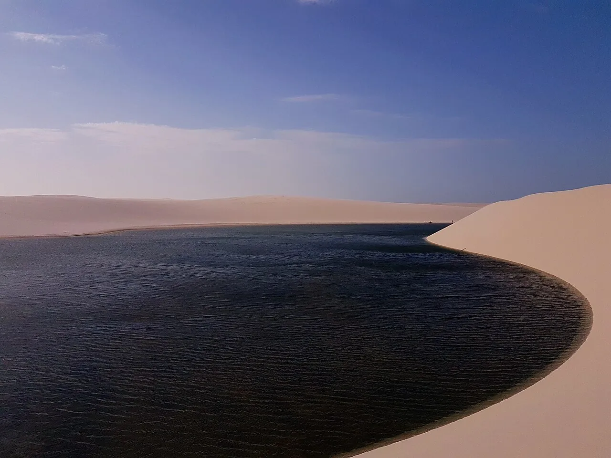

Atins
Lençóis Maranhenses, Brésil · kitesurf, baignade

Village aux portes des dunes blanches et lagunes d’eau douce des Lençóis. Kite à l’embouchure de la rivière.
- Lieu
- Lençóis Maranhenses, Brésil
- Niveau
- Intermédiaire
- Activités
- kitesurf, baignade
- Type d'eau
- Mer / océan
- Coordonnées
- -2.57, -42.74 (position approximative du secteur)
Dangers à connaître
- Courant à l’embouchure.
- Désert de dunes sans repères.
Le conseil d'Ocean Buddy
Pars avec un guide pour les lagunes : les dunes se ressemblent toutes.
Ouvrir dans Ocean Buddy Télécharger sur l'App Store
Source : Fiche Ocean Buddy · septembre 2026 · à vérifier localement.